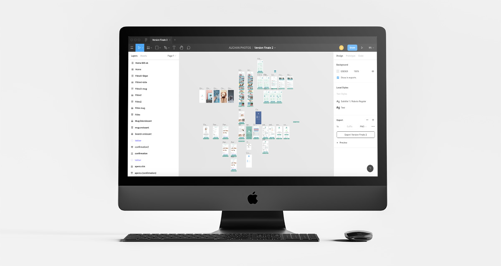

¬ Étude de cas - Auchan Drive

Qui ne connaît pas l’emblème du Nord ? AUCHAN, la star du centre commercial ! Petit déjà je vaguer dans ses rayons Cds, bande dessinées, mangas et VHS (oui oui). Là-bas on y trouve de tout, de l'alimentaire, du jardinage, de l'high-tech, etc. Je ne vais pas m'éterniser car nous n’allons pas nous intéresser au magasin physique, mais bel et bien au service de retrait de marchandises, le Drive.
L’application Auchan Drive
J’ai découvert cet univers lors d’un covoiturage avec mon collègue. Durant la route, mon collègue m’a expliqué qu’il avait fait ses courses sur le site internet d’Auchan durant sa pause du midi, afin de récupérer ses achats rapidement en faisant un petit crochet en rentrant chez lui. Ça lui fait gagner du temps et n’aimant pas faire ses courses sur place car il est agoraphobe, et en plus il serait trop tenté d’acheter des gourmandises, c’était mieux. Pas faux. Dans sa commande il y avait des croquettes, de la litière et de l’eau. En gros, du volume bien pénible à transporter au supermarché. Le côté négatif, m’a-t-il dit, est que l’on ne choisit pas ses fruits, la date de péremption, et si c’est indisponible on nous l’indique pas lors du retrait. C’est pour ça qu’il prend des choses sans DDP. Le constat n’a pas changer depuis deux ans.
L’application, à quoi sert-elle ?
Pour anecdote, je n’avais jamais utilisé l’application Auchan Drive, ni même le site internet.Et encore moins ses concurrents tel Chronodrive, Drive Intermarché et j’en passe.
Concrètement l’application permet de faire comme sur le site internet, c’est à dire, faire ses courses en ligne, quand on a le temps, en une ou plusieurs fois, afin de les récupérer dans un relais Auchan Drive situé un peu partout près de chez soi, au jour et à l’heure souhaité (selon créneaux disponibles). Tu paies sur place, mais d’autre choix son possible.
Pourquoi j’utiliserai cette application ?
Le grand intérêt de l’application est juste au niveau de l’agencement des éléments, c’est adapté à 100% aux mobiles et aux tablettes. Tu as un accès rapide au service sans passer par un navigateur. Après pourquoi j’irai faire mes courses chez Auchan et pas chez un concurrent, question de goûts, d’intérêt. Personnellement peu importe, je souhaite juste avoir mes courses au plus vite, peu importe chez qui.
Suite au confinement, la fréquentation a fortement augmenté, l’application a dû évoluer, les utilisateurs également. Quel est son avenir ? Va-t-elle remplacer les magasins physiques ou les utilisateurs vont de nouveau fréquenter les magasins ? Y-a-t’il eu de nouveaux utilisateurs non client de Auchan ?
Pourquoi j’utiliserai cette application ?
Le grand intérêt de l’application est juste au niveau de l’agencement des éléments, c’est adapté à 100% aux mobiles et aux tablettes. Tu as un accès rapide au service sans passer par un navigateur. Après pourquoi j’irai faire mes courses chez Auchan et pas chez un concurrent, question de goûts, d’intérêt. Personnellement peu importe, je souhaite juste avoir mes courses au plus vite, peu importe chez qui.
Suite au vote de chacun (après un tour de table), ici nous étions quatres, Alice, Ezahra, Hanane et moi même ; Alice a eu le rôle d'intervieweur, Ezahra le rôle de facilitatrice et Hanane de décideuse. De mon côté, rien, mais j’ai pu avoir le rôle de décideur sur un ancien projet.
Le contexte, pourquoi Auchan Drive ?
Le hasard a fait que pour mon tout premier projet à la Pop School, nous avions mon groupe et moi même travaillé sur l’application Auchan Photo (si si, ça existe). Ici rien à voir, car nous sommes confronté à d’autres problématiques sur Auchan Drive. Cependant, il y a malheureusement une similitude, ils ont de mauvaises critiques et sont mal noté sur les plateformes de téléchargement. Une bonne raison pour nous de jeter un coup d’oeil sur ce qu’il ne fonctionne pas bien ou tout simplement, sur ce qui est mal compris par l’utilisateur. D’autant plus que le e-commerce est de plus en plus en utilisé.
En aparté : C'est mon troisième projet, avec à chaque fois un nouveau groupe à la conception. La méthodologie appliquée est quasi identique pour ce projet.
La problématique, le challenge à relever
Avant de répondre à cette question, je vais d’abord expliquer la méthodologie.
Dans un premier temps, nous avons testé l’application dans son ensemble : l’ergonomie, les fonctionnalités, etc ; et ensuite nous avons essayé de faire le parcours d’achat, c’est-à-dire : choisir un produit, le mettre dans le panier et pour finir payer. Durant ce test, une seconde personne retranscrit textuellement ce que ressent l'utilisateur par des CPN “Comment pourrions-nous”. Il note tout ce qui semble perturber et interférer lors du parcours utilisateur. Exemple : Comment pourrions-nous valider sa commande, comment pourrions-nous aller rapidement sur sa liste d’achat.
Dans un deuxième temps, nous avons lu les critiques et avis sur les plateformes de téléchargement et en avons conclu que, outre les bugs d’accès, de déconnexions intempestives, beaucoup de soucis sont au niveau de l'interactivité, de la lenteur d’achat de produits, que la navigation n’est pas pratique et fluide.
Pour conclure, nous avons eu les mêmes remarques que certains utilisateurs ; de ce fait, nous nous sommes penché sur :
- une refonte de l’ergonomie (en privilégient la rapidité d’action d’achat de produit),
- Simplifier les listes d’achats,
- Améliorer l’affichage des produits,
- Appliquer un système de tri pré-réglé (que la personne aura complété et enregistré dans son profil).
v1 : https://www.figma.com/file/QHQvEvisiO1nZoiGofc3ju/Drive-Groupe2-MOBILE?version-id=273679372&node-id=0%3A1&viewport=319%2C82%2C0.06395114958286285
v2 : https://www.figma.com/file/QHQvEvisiO1nZoiGofc3ju/Drive-Groupe2-MOBILE?node-id=0%3A1
Le process - Journal de bord - Jour 1
Une fois la problématique défini, on teste différentes applications (concurrents ou similaires) afin de trouver des pistes d'améliorations pour Auchan Drive. On échange entre nous les solutions trouvés et on créer un persona ensemble.
C’est une femme active et habituée du Drive, ayant deux enfants dont un intolérant au gluten. Elle souhaites des produits Bio, pas cher, et est Vegan. Elle fait ses courses durant sa pause déjeuner le midi sur l’application Auchan Drive, et récupère ses achats juste après sa séance de sport en fin de journée. Elle n’aime pas perdre son temps, car elle n’en dispose pas beaucoup, son travail et ses enfants sont très prenant. Suite à cela, nous inventons un parcours client.
Ici, ce parcours est : La cliente est une habituée, aujourd’hui, cette personne souhaite regarder les nouveautés et promotions, “Il y a peut-être une offre à ne pas manquer” se dit-elle ;) Car elle est économe. Ensuite elle souhaite valider sa liste “achat de la semaine” afin de la mettre au panier, puis, ajouter un coulis de tomate à son panier, car elle souhaite faire des pâtes à la sauce tomate ! Yummy. Et pour conclure, aller dans son panier d’achat afin de confirmer sa commande et valider son point de relais, ainsi que l’heure du retrait de marchandise.
Une fois tout cela en tête, nous passons aux croquis papier et dessinons chacun de notre côté les wireframes, qui correspond au parcours utilisateur idéal : Screen 1 - Accueil, Screen 2 - Inscription...
Une fois terminé, chacun regarde le parcours de l’autre et vote le parcours qui lui semble idéal.
Ensuite, le facilitateur essai d’expliquer ce qu’il comprend du parcours, une phase de question est possible, également, la personne qui a réalisé le parcours peut expliquer au facilitateur si il a mal compris.
Une fois chaque parcours expliqués, il y a un dernier système de vote. Chacun vote les slides (2 slides par personnes et 4 pour le décideur) qui lui semble essentiel à ajouter au parcours et donc, adapté à notre problématique.
Note : Si c’est une création d'application, nous devons dès le début, sélectionner ses slides favorites, une fois cela, le facilitateur explique ce qu’il comprend des parcours, même procédé, questions et explications. Ensuite chacun vote une seconde fois, et ici, définitivement sur 2 slides, et 4 pour le décideur.
Pour finir, nous intégrons les slides votées au parcours afin de le rendre optimal. Une petite pause n’est pas de refus.
Pour finir, nous intégrons les slides votées au parcours afin de le rendre optimal. Une petite pause n’est pas de refus.
Une fois l’esprit plus libre, nous répartissons les tâches de chacun, c’est-à-dire les pages à prototyper sur Figma, de qui prépare les composants Assets, Tab bar, Top bar, styles, typos, charte graphique, etc.
Mais avant tout, il faut choisir son support de développement, ici c’était un iPhone 8 plus, soit un format de 414 x 736 px.
Le process - Journal de bord - Jour 2
Après une nuit de réflexion et de recul, nous appliquons nos nouvelles idées au prototype et passons en phase de test online, conditions particulières car nous ne sommes plus dans les locaux de la formation, plus en face des interviewers. Cependant c’était très enrichissant, car nous sommes en condition réelle.
Alice fait l’interview de cinq utilisateurs (ici : Awa, Nicolas, Vincent, Hélène et Seyma) pendant que le reste de l’équipe note les difficultés et gênes rencontrées durant le parcours. Mais également les points positifs ;)
Pour info, nous avons utilisé l’application Zoom pour visionner l'écran et le parcours de l’utilisateur interviewer. Et pour l'échange entre nous, nous avons utilisé le logiciel Discord.
Une fois les tests terminés, nous synthétisons l’ensemble des problèmes rencontrés, et répartitions des plus cités sur une matrice d’itérations en XY afin de prioriser les corrections selon les difficultés techniques DT (en X) et valeurs ajoutés utilisateurs VAU (en Y).
Les remarques négatives les plus pertinentes et récurrentes étaient :
- Système d’étoiles favoris dans liste pas assez compréhensible
- Boutons retour arrière sur certaines pages (fil d’Ariane)
- Différenciation du panier de la liste d’achat
- Confusion dans l’ajout produit dans le panier ou dans la liste d’achat
- Système de promo (produit unique ou une promo dans le panier ?)
- Suivi de livraison à remplacer par quelque chose de plus pertinent
Une fois le classement fait, on applique sur Figma les corrections au prototypage, la v1 devient la v2.
Le process - Journal de bord - Jour 3
Seconde phase d'interviews et Feedback :
Mêmes opérations que le jour 2, ici nous refaisons une phase de tests utilisateurs (cinq intervenants : Marie, Guillaume, Hélène une seconde fois, et Kaouther). L'intérêt d’une même personne permet de connaître si la mise-à-jour a été correctement appliqué et comprise.
Conclusion, les nominés pour cette V2 sont (les retours négatifs les plus pertinents et récurrents) :
- Incompréhension de la liste et du panier (ajouter un produit dans ma liste ou au panier - je continu mes achat en dehors de la liste ? - faire un système de bouton d’achat rapide ?)
- Accès de produit pas assez rapide depuis la liste - accéder au système de recherche et de suggestions
- Boutons en bas dans la page liste pas encore explicite
- Doute entre le panier et la liste
- Étape de livraison perturbante (disponibilité dans les heures) - être guidé - Scroll à supprimer
Le process - Journal de bord - Jour 4
Design critique :
- Présentation de l'équipe.
- Objectif du projet, contexte et historique de la recherche.
- Persona et parcours utilisateurs.
- Les retours attendus.
- Questions / Clarification : prendre quelques minutes pour permettre à quiconque d'intervenir en apportant des questions de clarification.
- Feedback.
- Merci à tous.
(Retour d’idées des intervenants suite au Design critique)
- Un meilleur outils de recherche avec “suggestions de produits” possibilité d’aller dans un rayon, et même avec un système de tiroir aller dans le sous rayon.
- Possibilité d’ajout produit dans une liste directement sur le produit par le biais d’un picto.
- Plus de rayons, et parfois mieux répartir.
- Ajout de pop-up sur chaque grandes actions : “Ajout au panier”, “ vous avez activé la liste intel”, “vous avez mis le produit dans votre liste intel”...
Apprentissage / solutions retenus
Points négatifs :
- Mauvaise optimisation du temps du travail : on a plus privilégié l’aspect graphique que la partie innovation et accessibilité utilisateur.
- Mauvaise répartition des tâches : la disponibilité de chacun était différente et certaine personne avait de la difficulté avec le prototypage sur Figma.
- La responsabilité de chacun
(Retour d’idées des intervenants suite au Design critique)
- Découverte de la complexité d’un site e-commerce, de travailler à plusieurs à distance et de trouver les priorités dans un projet.
- Découverte du prototypage en responsive sur Figma.
- Bien réaliser le parcours client, aller à l’essentiel, faire le minimum de possibilité de choix.
- Mieux répartir le UX que le UI, nous ne faisons pas de graphisme, ce n’est pas la demande.